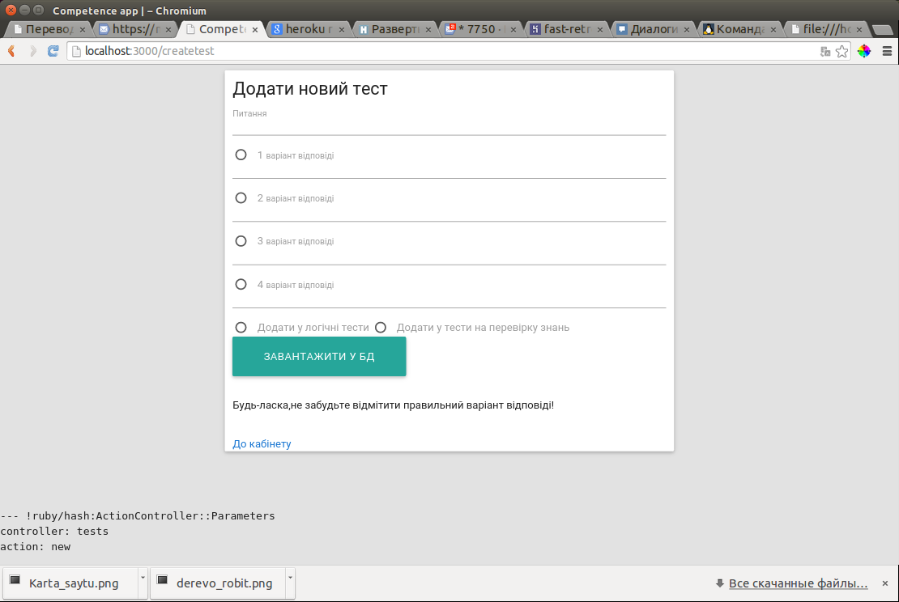

Додавання тестів компанії
Зробити так званий генератор тестів для кожної компанії на ії сторінці
Опис будови модулю «Генератор тестів»:

-
Для кожної компанії можливе додавання власних завдань для оцінки знань або додавання логічних тестів
Генератор тестів - сторінка на якій компанія може додати власне завдання
Сам генератор має поле для вводи запитання,також поля для відповідей,і поле де треба відмітити правильну відповідь
Ще потрібно вибрати,у яку саме БД буде занесений тест (логічні тести/тести на знання) Після того як ви додали тест ТІЛЬКИ ВАШІЙ компанії буде наданий доступ до нього(буде прив’язаний до компанії)
-
Модуль додвання тестів строго прив’язаний до конкретної компанії(За допомогою методу Rails (has_many/belongs_to)):